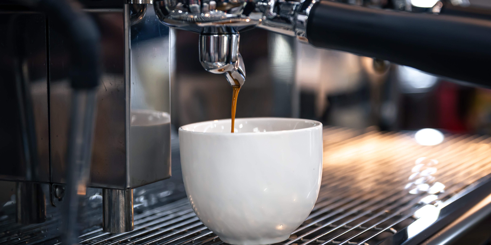
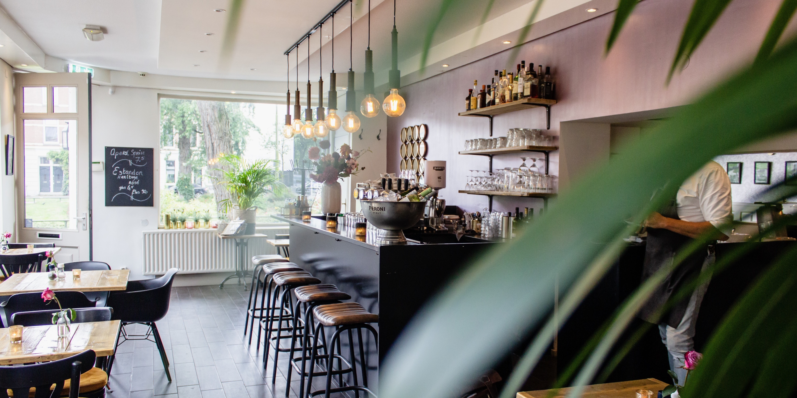

¡Descubre la exelencia en cada taza! En nuestro cafe, encontrara una mezcla unica de granos
cuidadosamente seleccionados de todo el mundo tostados a la perfeccion para brindarte una experiencia de
sabor inigualable. Cada sorbo es una celebracion de calidad y el aroma que solo el mejor cafe puede ofrecer.


¿Quienes somos?
Bienvenidos a Astron, un café ubicado en Lincoln, Buenos Aires. Nos apasiona crear un ambiente cálido y acogedor donde las personas puedan reunirse, relajarse y disfrutar de café de calidad y deliciosa comida. Nuestro dedicado equipo de baristas y chefs se esfuerza por brindar un servicio excepcional y crear experiencias memorables para nuestros apreciados clientes. Ya sea que estés buscando una rápida dosis de cafeína, un rincón acogedor para trabajar o un lugar para ponerte al día con amigos, Astron es el lugar perfecto. Únete a nosotros y disfruta de una encantadora experiencia en nuestro café.